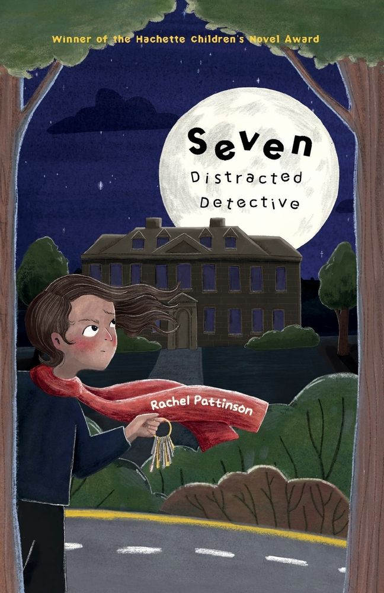

Seven: Distracted Detective by Rachel Pattinson

CLUE 1Hi, I'm Seven. And I'm 13. (Yeah, my name can be confusing.)
CLUE 2Maybe I was the last person to see him. And I have his keys.
CLUE 3Mr O, our caretaker at Riverside Academy, is gone.
THE CASECan a distracted detective solve a mystery?
A mystery for readers aged 9+
Seven: Distracted Detective
So, here's the thing. Mr O, our caretaker at Riverside Academy, is gone. Maybe I was the last person to see him, out on the school field, and he didn't look good. Now, he's missing. And I have his keys. Hang on, Mam's calling, again...
Winner of the Hachette Children's Novel Award at the Northern Writers' Awards 2023, and shortlisted for The Selfies Book Awards 2026.
Aralyn Press, 13 November 2025. Cover and interior illustrations by Lily Mae Kroese, cover design by Megan Watson.
New in September 2026
Seven is now an audiobook
Rachel made it herself, over a few months in her spare bedroom.
"I have a confession to make. I have spent the last few months talking to myself in my spare bedroom."
The case file, 2026
A year of sharing Seven around the North East, one activity a month for the National Year of Reading.
- 3 OctSunderland Minster Craft and Vintage Fair, signed copies
- 16 AugTynemouth Station Book Fair, her first time there
- 25 JulNorth East Children's Indie Book Fest, Field and Fodder, Bearpark, Durham
- 4 JulFamily Fun Day, Stockton Central Library
- JuneNational Crime Reading Month with Northumberland Libraries
- 23 AprWorld Book Night, seven copies of Seven given away
- 28 MarLocal Authors Celebration, Blyth
Hello, I'm Rachel
I'm an independent children's author based in the North East of England. I've always loved books: I'm a Chartered Librarian, and I've worked with Seven Stories, the National Centre for Children's Books.
I'm a director and trustee of Mortal Fools, I host a Little Free Library, and I'm writing a diary-based novel for early teens, because I love reading diaries like Adrian Mole, Wimpy Kid and Bridget Jones.
Reading it with a group?
There are book club questions and an information sheet for bookshops, and bookmarks for libraries and booksellers.
Get the resources